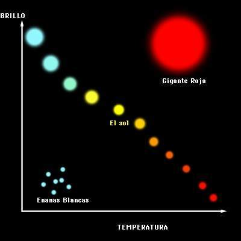

Cuando hablamos de las estrellas, nos referimos desde luego a esos puntitos brillantes que se observan en el firmamento cuando cae la noche. En realidad son grandes esferas luminosas compuestas de plasma. A pesar de hallarse en continua combustión, conservan su propia forma gracias a la enorme fuerza de gravedad que generan.
Las estrellas son esferas masivas en su mayoría, con una inmensa cantidad de masa que genera una intensa presión en su núcleo. Esta presión provoca reacciones nucleares, principalmente la fusión de hidrógeno en helio, liberando enormes cantidades de energía en forma de luz y calor. Esta energía es lo que las hace visibles en el cielo nocturno.
A pesar de que todas emiten distintos tipos de luz y de calor, apenas un pequeño porcentaje pueden ser captadas por el ojo humano, incluso con la ayuda de un telescopio. Alrededor de muchas de ellas también giran, como ocurre en nuestro Sistema solar, astros opacos como planetas, meteoritos o cometas, enganchados en su enorme gravedad.
Las estrellas no son estáticas, tienen un ciclo de vida que puede abarcar desde millones hasta miles de millones de años. Nacen a partir de nubes de gas y polvo en un proceso conocido como nebulosa, luego pasan por etapas evolutivas, como la secuencia principal (donde se encuentran la mayoría de las estrellas, incluido nuestro Sol), seguido por posibles fases de gigante roja, enana blanca o incluso supernova, dependiendo de su tamaño y masa.
Las estrellas son esenciales para la existencia de la vida en el universo, ya que son responsables de la generación de elementos químicos más pesados a través de procesos nucleares. Además, actúan como fuentes de luz y calor en los sistemas planetarios que las orbitan, incluido nuestro propio sistema solar.